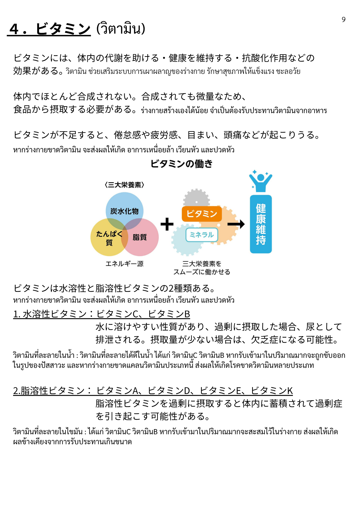
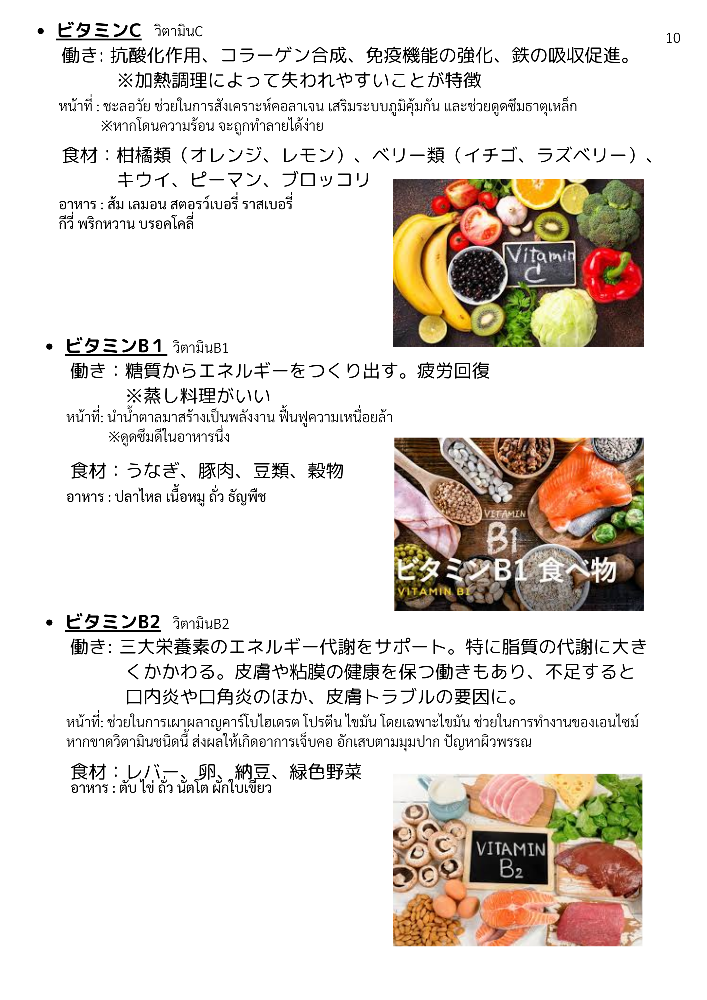
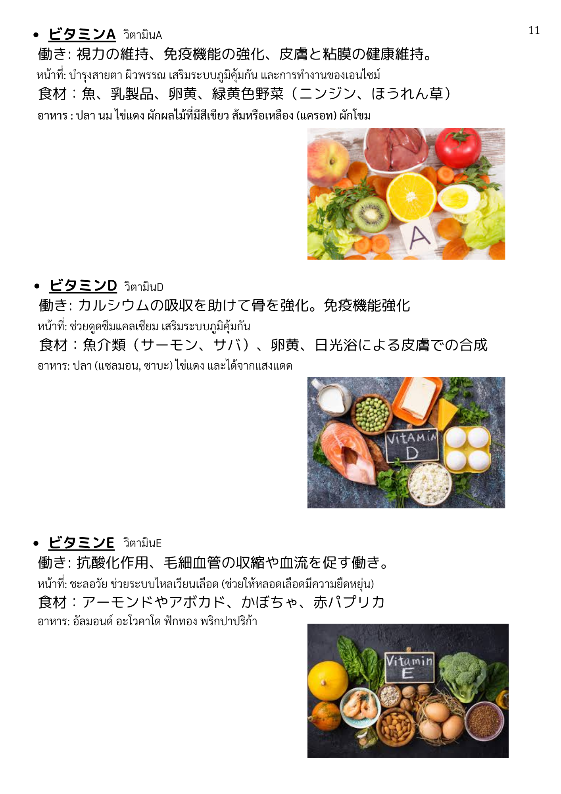
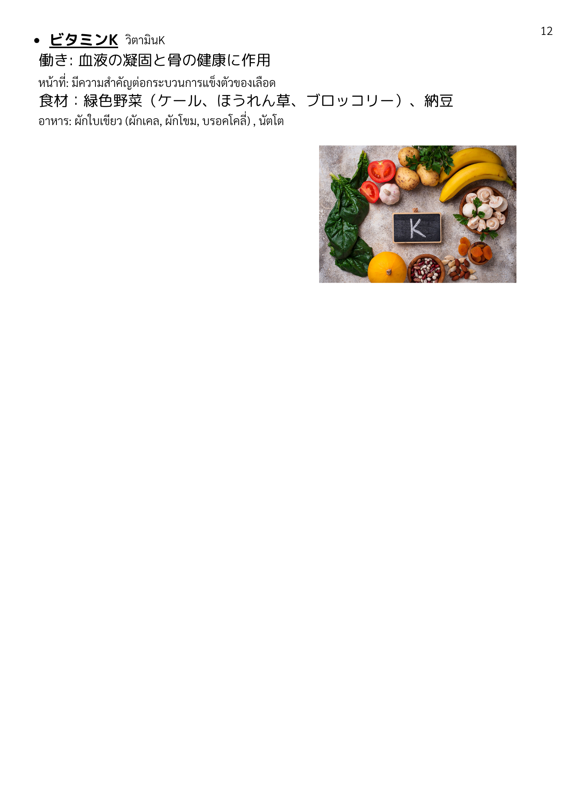

| 漢字 | ひらがな | ความหมาย (ไทย) |
|---|---|---|
| ビタミン | びたみん | วิตามิน |
| 体内 | たいない | ภายในร่างกาย |
| 代謝 | たいしゃ | การเผาผลาญ / เมตาบอลิซึม |
| 健康 | けんこう | สุขภาพ |
| 維持 | いじ | การคงไว้ / รักษา |
| 健康維持 | けんこういじ | การรักษาสุขภาพ |
| 助ける | たすける | ช่วย / สนับสนุน |
| 働き | はたらき | การทำงาน / บทบาท |
| 効果 | こうか | ผล / ประสิทธิภาพ |
| 微量 | びりょう | ปริมาณเล็กน้อย |
| 必要 | ひつよう | จำเป็น |
| 食品 | しょくひん | อาหาร |
| 摂取 | せっしゅ | การบริโภค / รับเข้าร่างกาย |
| 合成 | ごうせい | การสังเคราะห์ |
| 漢字 | ひらがな | ความหมาย (ไทย) |
|---|---|---|
| 三大栄養素 | さんだいえいようそ | สารอาหารหลัก 3 ชนิด |
| 炭水化物 | たんすいかぶつ | คาร์โบไฮเดรต |
| たんぱく質 | たんぱくしつ | โปรตีน |
| 脂質 | ししつ | ไขมัน / ลิปิด |
| 糖質 | とうしつ | คาร์โบไฮเดรต / น้ำตาล |
| エネルギー源 | えねるぎーげん | แหล่งพลังงาน |
| ミネラル | みねらる | แร่ธาตุ |
| 漢字 | ひらがな | ความหมาย (ไทย) |
|---|---|---|
| 水溶性 | すいようせい | ละลายในน้ำ |
| 脂溶性 | しようせい | ละลายในไขมัน |
| 2種類 | にしゅるい | 2 ชนิด |
| 性質 | せいしつ | คุณสมบัติ |
| 溶ける | とける | ละลาย |
| 過剰 | かじょう | มากเกินไป |
| 尿 | にょう | ปัสสาวะ |
| 排出 | はいしゅつ | การขับออก |
| 蓄積 | ちくせき | การสะสม |
| 過剰症 | かじょうしょう | ภาวะ/อาการเกิน |
| 欠乏症 | けつぼうしょう | โรคขาดวิตามิน |
| 可能性 | かのうせい | ความเป็นไปได้ |
| 漢字 | ひらがな | ความหมาย (ไทย) |
|---|---|---|
| 抗酸化作用 | こうさんかさよう | ฤทธิ์ต้านอนุมูลอิสระ |
| 免疫機能 | めんえききのう | ระบบภูมิคุ้มกัน |
| 強化 | きょうか | การเสริมสร้าง / แข็งแกร่งขึ้น |
| 吸収 | きゅうしゅう | การดูดซึม |
| 促進 | そくしん | การส่งเสริม / เร่ง |
| 促す | うながす | กระตุ้น / ส่งเสริม |
| サポート | さぽーと | การสนับสนุน |
| 作用 | さよう | การออกฤทธิ์ / ผล |
| 作り出す | つくりだす | สร้างขึ้นมา / ผลิต |
| 保つ | たもつ | รักษา / คงไว้ |
| 疲労回復 | ひろうかいふく | การฟื้นฟูจากความเหนื่อย |
| 漢字 | ひらがな | ความหมาย (ไทย) |
|---|---|---|
| 視力 | しりょく | การมองเห็น / สายตา |
| 皮膚 | ひふ | ผิวหนัง |
| 粘膜 | ねんまく | เยื่อบุ |
| 骨 | ほね | กระดูก |
| 鉄 | てつ | ธาตุเหล็ก |
| カルシウム | かるしうむ | แคลเซียม |
| コラーゲン | こらーげん | คอลลาเจน |
| 毛細血管 | もうさいけっかん | เส้นเลือดฝอย |
| 血液 | けつえき | เลือด |
| 血流 | けつりゅう | การไหลของเลือด |
| 凝固 | ぎょうこ | การแข็งตัว / จับตัว |
| 収縮 | しゅうしゅく | การหดตัว |
| 日光浴 | にっこうよく | การอาบแดด |
| 漢字 | ひらがな | ความหมาย (ไทย) |
|---|---|---|
| 不足 | ふそく | ขาด / ไม่เพียงพอ |
| 倦怠感 | けんたいかん | อาการอ่อนเพลีย / เหนื่อย |
| 疲労感 | ひろうかん | ความรู้สึกเหนื่อยล้า |
| 目まい | めまい | เวียนหัว / มึนหัว |
| 頭痛 | ずつう | ปวดหัว |
| 口内炎 | こうないえん | แผลในปาก |
| 口角炎 | こうかくえん | แผลมุมปาก |
| 起こる | おこる | เกิดขึ้น |
| 漢字 | ひらがな | ความหมาย (ไทย) |
|---|---|---|
| 柑橘類 | かんきつるい | ผลไม้ตระกูลส้ม |
| ベリー類 | べりーるい | เบอร์รี่ต่าง ๆ |
| ピーマン | ぴーまん | พริกหวาน |
| ブロッコリー | ぶろっこりー | บรอกโคลี |
| うなぎ | うなぎ | ปลาไหล |
| 豚肉 | ぶたにく | เนื้อหมู |
| 豆類 | まめるい | ถั่ว (ประเภทถั่ว) |
| 穀物 | こくもつ | ธัญพืช |
| レバー | ればー | ตับ (เครื่องในสัตว์) |
| 卵 | たまご | ไข่ |
| 卵黄 | らんおう | ไข่แดง |
| 納豆 | なっとう | นัตโตะ |
| 乳製品 | にゅうせいひん | ผลิตภัณฑ์จากนม |
| 緑色野菜 | りょくしょくやさい | ผักใบเขียว |
| 緑黄色野菜 | りょくおうしょくやさい | ผักสีเขียว-เหลือง |
| ほうれん草 | ほうれんそう | ผักโขม |
| ニンジン | にんじん | แครอท |
| 魚介類 | ぎょかいるい | อาหารทะเล |
| サーモン | さーもん | แซลมอน |
| サバ | さば | ปลาทู |
| アーモンド | あーもんど | อัลมอนด์ |
| アボカド | あぼかど | อะโวคาโด |
| かぼちゃ | かぼちゃ | ฟักทอง |
| 赤パプリカ | あかぱぷりか | พริกหวานสีแดง |
| ケール | けーる | เคล |
| 漢字 | ひらがな | ความหมาย (ไทย) |
|---|---|---|
| 加熱調理 | かねつちょうり | การปรุงด้วยความร้อน |
| 蒸し料理 | むしりょうり | อาหารนึ่ง |
| 失う | うしなう | สูญเสีย / สูญหาย |
| 特徴 | とくちょう | ลักษณะเด่น / จุดเด่น |
| 場合 | ばあい | กรณี / ในกรณี |
| 少ない | すくない | น้อย |